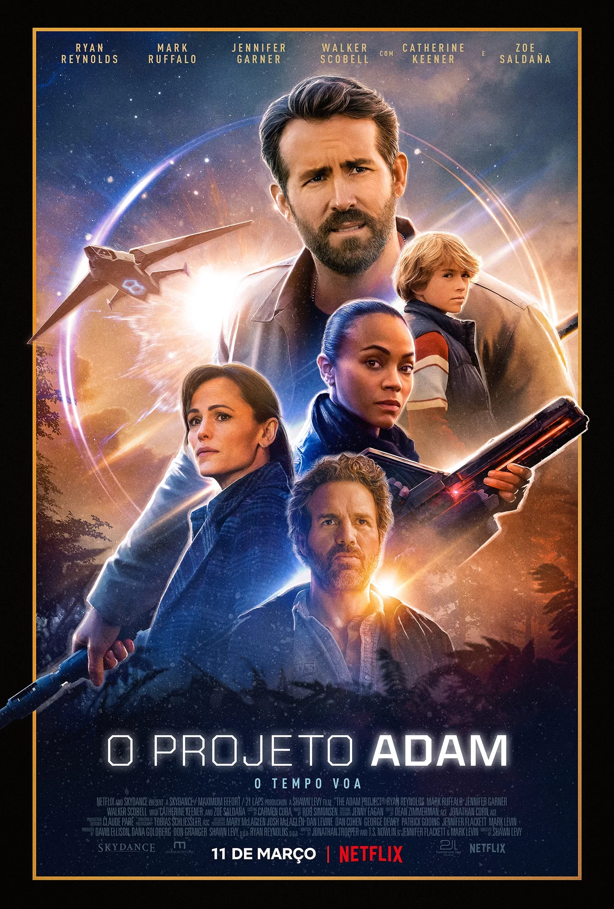

IMDb Charts
Filmes Mais Populares
Escolhidos pelos usuários IMDB

Sinopse desconhecida
- Sinopse desconhecida.
- Direção: Matt Reeves
- Roteiristas: Matt Reeves, Peter Craig, Bill Finger(Batman created by)
- Artistas: Robert Pattinson - Zoe Kravitz - Jeffrey Wright
O Projeto Adam

Um piloto que viaja no tempo junta-se a seu eu mais jovem e a seu falecido pai para chegar a um acordo com seu passado e salvar o futuro.
- Sinopse desconhecida
- Direção: Matt Reeves
- Roteiristas: Matt Reeves, Peter Craig, Bill Finger(Batman created by)
- Artistas: Robert Pattinson - Zoe Kravitz - Jeffrey Wright